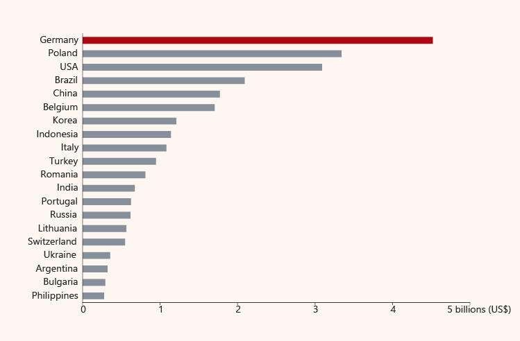
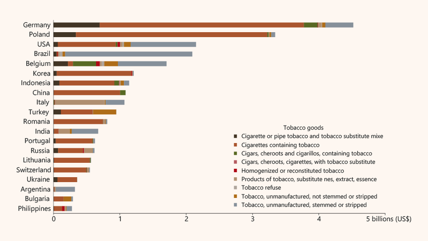
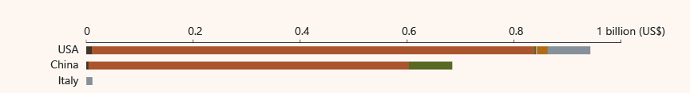
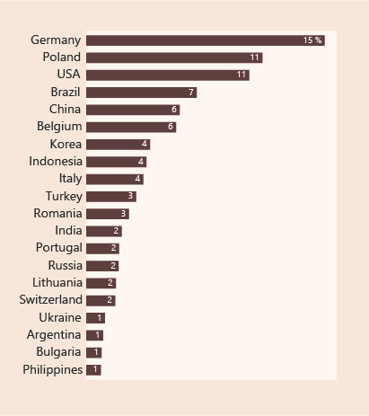
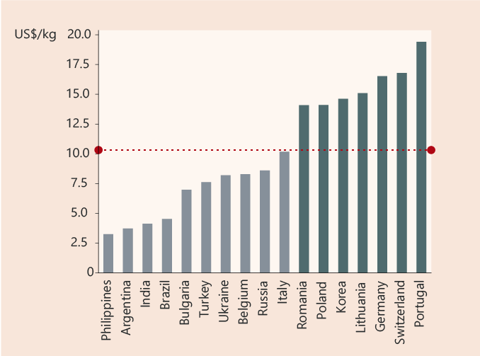
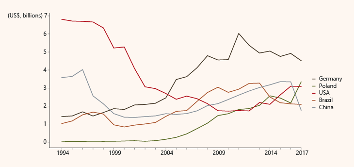

Tobacco Exports Worldwide
BY Kelly Kiki
Published July 27, 2018
Global sales from tobacco cigarettes exports by country totaled more than US$ 29 billion in 2017. Germany is the leader, followed by Poland and USA. Overall, 20 countries shape the global market, as their shipments amount to US$ 26 billion or 89% of worldwide exported cigarettes. Let's zoom-in and get a closer look at them.
Top-20 Countries in Tobacco Cigarettes Exports (2017)
Germany is the “big player”
SOURCE: UN data
Apparently, cigarettes containing tobacco is the major type of domestic commodity exported by top-20 countries. Some of them, such as Brazil, USA, Argentina and Belgium, seem to also rely on domestic unmanufactured tobacco in the form of fermented leaves, stemmed or stripped (for further details on products, see here). Brazil exports mostly unmanufactured tobacco, stemmed or stripped and it dominates: In 2016, the product was the 298th most traded product out of 4,853 exported goods of any kind worldwide. Regarding re-exportation, China competes USA by exporting foreign goods; their dollar value difference is 258 million US$. Italy joins them by re-exporting unmanufactured tobacco.
Exports of Domestic Tobacco Goods by Top Country
Dollar value of domestic goods exported amounts to 94% of the total tobacco trade value
SOURCE: UN data
Re-Exports by Top Country
USA, China and Italy are the only exporters of foreign tobacco goods
SOURCE: UN data
Although Germany is amongst the most expensive suppliers, its exports dollar value is the 15% of total earnings worldwide, while it is closely followed by Poland and USA, each one of which earns 11% of the grand total.
US$ Value Shares on Total Exports Worldwide
German exports value is 15% of the global total
SOURCE: UN data
Top Exporters' Rates
Average price per kg is 10.36 US$.
SOURCE: UN data
NOTE: China, USA and Indonesia are excluded from this analysis, because weight data are not provided for some categories of exported tobacco products.
Once we look back to see how top-5 exporters have been performing over the years, we realize that German exports keep growing from 2004 onwards, while USA starts decreasing its exports in late ’90s. Could that be correlated with smoke-free regulations and/or tobacco advertising restrictions? Indeed, the EU Directive on Tobacco Advertising (2003) bans cross-border advertising of tobacco products in radio, print and online media. But that could be an open question for further analysis in the future.
How Top-5 Exporters Perform Over The Years
It seems that 2004 is a milestone for both growing and weakend forces
SOURCE: UN data